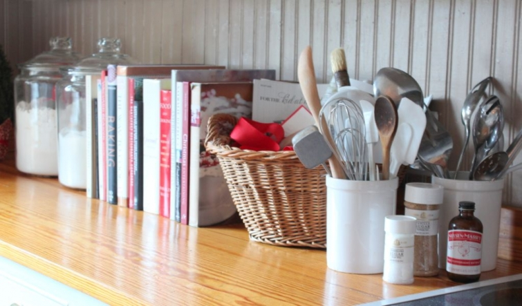
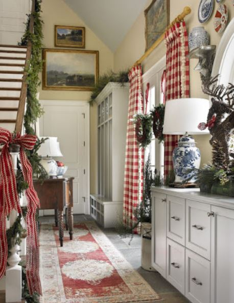
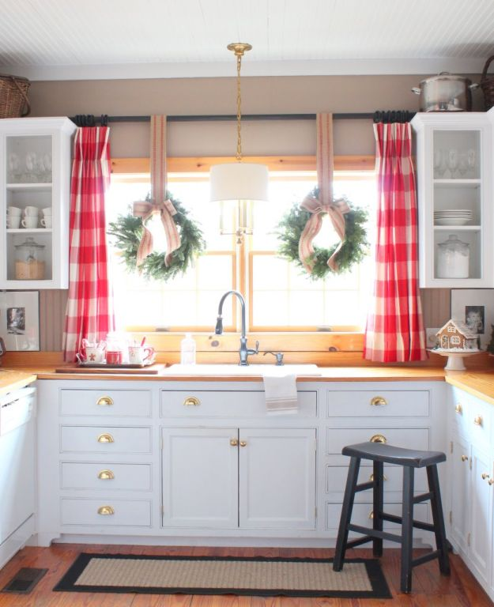

.png)
.PNG)
.PNG)
.PNG)
.PNG)
.PNG)
.JPG)
.JPG)
.PNG)
.PNG)


Do you use much red in your home? The Christmas season provides the perfect excuse to add even more of my favorite color to our home here (not that I needed an excuse. :)) I love to use it everywhere I can – especially in the kitchen. For example…do you see those drapes in the photo below? Every time I saw that photo on Pinterest, I wanted those drapes. Every time I went in James Farmer’s shop and saw them hanging there in all their checked beauty, I wanted those drapes. So guess what I did…
I ordered some fabric and made some red checked drapes for the kitchen and dining room! They are not hot pink as they appear in the photograph. They are a lovely Christmas red. I really debated about using the trim on them like James Farmer did on his, but I finally decided that was a bit too fancy for our very casual rooms.

For our wreaths in the kitchen this year, I didn’t think red ribbons were needed with the jolt of red in the fabric. So I used jute webbing with a touch of red in it. Mine came from Hobby Lobby, but it is also available here if you are interested in ordering any.

Natural 3 1/2″ Jute Webbing-36 Yards
Here is a closer view of how it looks on the wreaths. The bows are pinned on since this fabric is too stiff to actually tie in a bow.
Now for a little more red in the kitchen.. packaging, my Christmas dishes, cookbooks, and notebooks all in the desk area bring a punch of holiday color. The little tree is back in the corner there with its red paper wrapped pot again.
Here’s the chalkboard I hand lettered with Martha Stewart’s recipe for her Christmas cookies.
At the other end of the counter are more red cookbooks and red cups in the flour and sugar jars. Last year’s gingerbread house is there on a red plate after spending the year in the freezer.
The cocoa tray is back by the window with the Williams-Sonoma Christmas Icons mugs and a red tin of hot chocolate and some candy canes for stirring.
The other beverage areas have red cups, napkins, tea packaging, and bags of coffee.
The island is full of jars of Christmas cookies again, and a red cake stand holds pecan bars. I made the chocolate chip and the sugar cookies, but my sons bought the Christmas tree cookies and the bourbon pecan bars at Fresh Market for me. Those sweets won’t last long around here.
That takes us all the way around our little kitchen area.
And on this first day of December, I wanted to begin celebrating Christmas with you by doing one of several giveaways I have planned for the next couple of weeks. Because my favorite day in December is the 25th, I am giving one of you a $25 gift card to one of my favorite stores, Williams-Sonoma. I am not affiliated with them, but I do LOVE to shop there. So I hope that one of you will also enjoy finding something for your kitchen there.
Just leave a comment on any or all of the Christmas Favorites posts that publish between November 29, 2013 and next Sunday, December 8, 2013 at midnight. (That means if you left a comment on the previous post about my favorite Hot Christmas Tea you are already entered! :)) I will be back with the dining room decorated for the holidays in my next post, and I will leave you with a sneak peek of the room and a question:
Do you have a favorite Christmas cookie? If so, please tell us what kind.
We devour quite a few Christmas cookies around here in December! My husband’s favorite is a very plain (and soft) sugar cookie – with no decoration on it. I love those easy to make graham cracker pecan praline cookies.
Looking forward to hearing from you soon!

***giveaway has ended***


.PNG)
Hmmm…favorite Christmas cookies? Chocolate crinkles! Or maybe Chunky Fruit Oatmeal cookies! Or Linzer tarts! Maybe jam thumbprints? Or….
I have to admit i love going to cookie swaps because of all the cookies I get to take home. Last year we had pointsetta punch (cranberry and champagane) and I made Jack & Ginger cookies. Just a boxed mix but substitute the water with Jack Daniels.Then they get frosted with more Jack Daniels mixed with powdered sugar frosting.
Your kitchen is so festive! These pictures have been the inspiration for my kitchen redo. Have the paint color for the cabinets chosen and once those are done we will replace the countertops with the butcher block ones at Lowe’s and beadboard backsplashes! Love every inch of your kitchen!
This is the coziest prettiest Christmas kitchen I’ve ever seen.
Making my baking plans and came back here to get new ideas. Still making date nut balls but adding new ones to the list. Also, using your drink set up for the kids as well as a hot chocolate bar. Can’t wait!
I love snickerdoodles!
My favorite holiday cookies are Pizzelles, flavored with vanilla and anise. I love to bake, especially during the holidays 🙂
I love your red curtains! Our favorite dessert is a fruitcake made with mincemeat. It is an old recipe and does not have a lot of candied fruit in it.
Best Wishes for the Season!
Emily
soft sugar cookies
Big soft ginger cookies are my holiday favorite.
Our family’s favorite Christmas cookies are Chocolate Cherry Cookies – a hands down favorite!
My favorite Christmas Cookies are eiter Sugar Cookies or Snickerdoodles.
Digicats {at} Sbcglobal {dot} Net
I love red at Christmas and throughout the year. Most of my rooms have touches of red so decorating with additional red at Christmas always works. My favorite cookie is my grandmothers annisette cookies that I now make each year.
Frosted sugar cookies are my favorite!
Can I say Christmas cookie DOUGH is my favorite? I usually eat so much as I make them, I’m too full for the cookies. Particularly shortbread/sugar cookie dough…and I teach Family and Consumer Sciences…please don’t let my students know! Love WS, enjoyed a part-time job there a few years ago!
I switched to red this year! Love it! Our favorite cookie this year is lemon ricotta!
I love the red. So cheerful! Chocolate chip cookies are my favorite for Christmas.
I love gingerbread! Nummy
The red touches in the white kitchen are just darling. My favorite cookies are Snowballs also known as Mexican Wedding Cakes.
Kelly, I just love your attention to detail (red cups in the flour and sugar containers…brilliant!) My favorite cookies are the pecan balls rolled in powdered sugar. My family’s favorite cookies are a butter cookie I make every year. Enjoy the Season!
Love your new checked curtains (glad you left them simple) and love the wreaths with the webbing! Darling!
Good morning Kelly,
You know I love your kitchen! Always something new for the eye and the red is beautiful. So festive. How do you like your wood counter tops? It’s an option for us too. My personal favorite cookie is traditional sugar cookies ready for Santa but my sons love pizelles. I just purchased an iron and am ready to try them this year. Usually my neighbor makes them and shares. A wonderful friend. I also love date nut balls and cream cheese cookies. Lots of wonderful options listed here and wish we could all have a cookie swap! Have a wonderful day!
I’m hanging two wreaths at my breakfast windows after viewing your kitchen. Lovely. My favorite Christmas cookies are frosted cut outs.
I love your red buffalo check curtains and your touches of red throughout your kitchen. I always get such good ideas from your blog. My favorite cookies are peanut butter blossoms…small peanut butter cookies topped with Hershey kisses. Yum!
Hi Kelly! I’ve missed quite a few blog posts, as we had some BIG ‘fix-its’ to take care of before Thanksgiving, but it was fun to have so many posts in a row to read! It’s hard to narrow down a favorite cookie to just one, but I have to say ours must be the ginger cookie recipe I found years ago in a magazine. I use red or green sanding sugar on top of the cookies at Christmas, but when I use granulated sugar, the crackled tops look like mounds of snow. I love all the detail you put into your decorations. Red is a favorite color of mine too. I have a red accent wall in my kitchen, which makes decorating at Christmas easier! 😉
How absolutely “Christmas Gorgeous”!!! The cookie jar in multiples’ is brilliant!!! So are the Beverage Stations!!!! And I’m with your husband on the soft sugar cookie… just plain ole’ soft sugar cookies!!! YUMMMMM…. My other all time fav would be my Mom’s Ginger Snap Cookies ….
The red checked curtains are perfect, as is the webbing to hold up the wreaths. Love the beverage stations, too. Now I want some hot chocolate!
Viennese Crescents dusted with powdered sugar are my go to cookie to bake during the holidays. Both my family of origin and in-laws all look forward to the tins I hand them on Christmas Day. They taste divine and look so pretty and wintry in all their white powdery goodness.
If I lived in your house seeing those curtains every morning would make me smile.
Enjoy… and Happy Holidays.
Brenda S. Moore
Love your kitchen decorations!! My favorite Christmas cookie is Soft Ginger Cookies. They smell heavenly when they are baking!! 🙂 Taste good too. 😉
One of my favorite cookies are Peanut Blossoms.You usually see them made with Hershey’s Kisses but I search far & wide for Brach’s Chocolate Stars for mine. I could make these cookies any time of year but I only tend to take the trouble at Christmas! Plus I don’t need to have these available to eat all year, haha!
My Aunt Betty makes the best sugar cookies shaped like a wreath, green icing and red hots for berries. I can make myself sick on them because I have no ability to stop eating them! My other favorite cookie is chocolate chip-can’t stop eating those either!
Love your kitchen and the curtains!
I love your red, too! It is warm and fresh and new all at once. My favorite Christmas cookie is a family favorite…sandbakels. Every family for 5 generations makes a batch, and there are never too many! Merry Christmas.
I love the curtains in the kitchen. I too am a huge fan of red. Your house is beautiful and I always enjoy seeing your latest projects. Merry Christmas!
I have printed the hot Christmas tea and can’t wait to try it. I love the red. . .red is my color too. I have painted the back wall of my white kitchen cabinets red. Makes the white ironstone and clear crystal stand out a bit.
I just love your red buffalo check curtains! Your kitchen is so warm & inviting; thanks for sharing it with us. My favorite Christmas cookies are Date Pinwheels.
I love all the red, especially the curtains. I’m curious — where’d you buy the fabric? Favorite cookie? Wow! That’s hard to say – chocolate chip, Oreos (with the red middles), no-bake chocolate. I’m not fussy. I love sugar and chocolate. Have a great week!
I always make (and eat!) apricot pistachio biscotti every year. That and some chocolate hazelnut biscotti along with orange coconut macaroons dipped in dark chocolate. Can’t wait!
Love your decorating…I study the pics and try to incorporate your talent into my home! The finishing touches are the best! ( red cups in the flour and sugar! Love!) My favorite Christmas cookie is the one my mom made,Thumbprint,with strawberry preserve in the center. Yum! God Bless,I love your blog!
Loving the curtains (you are too clever) and the bright pops of seasonal red throughout your home. That jute ribbon is precious, I have been looking for something just like that to wrap around the tree. Last year, Michael’s had pre-made bows in a similar ribbon – I bought two when I first saw them in October, and, of course, when I went back for more, they were all gone. We just got a Hobby Lobby in our state so I will have to visit there. Favorite cookies for Christmas, sugar, chocolate peppermint, and peanut butter blossoms. Yum!
Beautiful kitchen, my house in on a Holiday Tour this coming weekend, I thinkI will use your idea of a hot chocolate tray in my kitchen.
My fav cookie is Gingerbread men! Fun to make, fun to display!
Thank you!
I haven’t found too many cookies that I don’t love so picking a favorite is difficult. I guess I will pick the no-bake cookies made of oats, cocoa, and peanut butter . My 2nd favorite is the standard chocolate chip cookie made from the recipe on the back of Nestle tollhouse chocolate chips.
I teach first grade and have for many years…We always do a Gingerbread Christmas unit. I absolutely love gingerbread men. We even perform the plays, “Gingerbread Boy” and “Hansel & Gretel” I love the taste of ginger and molasses and sugar…Thank you for hosting the giveaway! Your blog is my favorite…Your kitchen is divine…I would love to spend the day there cooking and visiting…
As soon as I get the mess left from all kids home for Thanksgiving cleaned the decorating will begin! I am totally borrowing the hot chocolate bar with candy canes for stirring. Now I’m excited to decorate!
Hi, neighbor! My favorite cookie is called a pound cake cookie. It’s soft and buttery, just like a good pound cake. Love all of your ideas and recipes.
Hi Kelley… Your red curtains are beautiful. I love them with your white kitchen.
I don’t have red in my home but I use alot of burgundy.It works for me.
Your home is so lovely. Your cookies look so nice in the big glass jars.
I love chocolate chip cookies. My mama used to make the best ones. I add a little cinnamon to mine.
But my favorite has to be date pinwheel. So so good.
I shopped today. Our dishwasher died before Thanksgiving so we went shopping for one today. It is to be delivered Thursday. Cannot wait. Blessings to you Kelley. Becky
Kelly,
I love all of your red touches in the kitchen and I can’t wait to see where else you have incorporated red in your holiday home. The hot chocolate tray is my favorite. It is just so inviting. My favorite Christmas cookie is called magic bars. They have a delicious salty sweetness to them. They are perfect with steaming hot mug of tea or coffee. Thanks for sharing you cozy home with us.
Oh Kelly I LOVE your red curtains!!! I have always loved that James Farmer picture with the red buffalo check curtains and blue and white lamp and ginger jar. I actually pulled up your posts from last Christmas before I started decorating! I also love that you use a real tree and wreaths. I hope your school system has a nice long Christmas break that starts soon!!!
Kelly,
I love the red. Your home is always so lovely. Years ago I had red buffalo checked curtains in my dinette area. Do I wish I would have kept them.
My favorite Christmas cookies would be my mom’s’ Candy Cane Cookies.
Kelly,
I am so enjoying your wonderful holiday sharings! We love home made ginger snaps ! Delicious and easy to make. Another favorite is mark Ballard’s can’t stops. These two cookies are must bakes for Christmas for friends and family. Merry Christmas. Evelyn anne
I love red anytime of the year, whether it is in my house or the red leather in my car. As always, your kitchen is beautiful and all the goodies are making me so hungry. My favorite all time cookie is the Neiman Marcus Chocolate Chip Cookie. I have the original recipe and it is divine!!! Looking forward to seeing the dining room decked out for Christmas!
I love the red buffalo check drapes! I just ordered some pillows in the same fabric for the Christmas season!Your house looks beautiful!
The kitchen looks lovely with touches of red and the new curtains. The cocoa and coffee bars are a winner. Our favorite Christmas cookie is a fruitcake cookie.
*sigh* Your home is so inviting, Kelly. The kitchen looks lovely.
As far as cookies go, I’m a little ashamed to admit that my favorite is the no-bake chocolate peanut butter oatmeal cookies. Does it even count if they’re no-bake? haha! I am not a very prolific baker, but my much more domesticated best friend (all the way back to middle school) keeps me well stocked in cookies for the holiday season. 🙂
Your kitchen looks very festive! Love the ribbon on the wreaths. I don’t know how you can keep cookies in jars. Those would be gone in a day in my house! My favorite Christmas cookie is a funny one because it’s actually a jewish cookie and we’re not jewish. When I was growing up my Italian, catholic grandma Florence…..yes, directly from Italy would make these jewish cookies every year at Christmas. Rugelach. They were my absolute favorite cookie. Sadly, I never got her recipe before she passed away, but I have found a recipe that is pretty much identical. Some recipes have dried fruit or other variations. My grandma’s was pretty simple, but oh soooo yummy! We do a lot of sweets at Christmas….sugar cookies are another favorite. I would love one right now!
Love the red, especially that red cake plate. I too, have red throughout my kitchen. I’m looking forward to seeing more of your decorations.
Hi Kelly! I absolutely love your curtains! And you are just so talented with your vignettes throughout your kitchen. I really like your wreaths also. I look forward to every one of your posts. Your decorating inspires me! It is just my style. My favorite Christmas cookie is a basic thumbprint cookie. I prefer them filled in with icing as opposed to jam in the “thumbprint!” But, to be truthful, it would be rare for me to find a Christmas cookie that I didn’t like! I love baking Christmas cookies! Have a wonderful holiday season! Can’t wait to read your next post!
Kelly, you are incredible and I love your blog. I get so many ideas from you. You are so talented. I love Christmas and am so glad you are sharing your decorations with us.
Your kitchen always looks so homey with or without the red! We love soft chewy gingerbread men.
I love your Christmas decorations and will try to do some lovely touches like yours around our house as well…so inspiring!
First I want to say, that I made the holiday punch this Saturday. It was wonderful and rather reminded me of a Russian Tea recipe I had years ago. It must have been the use of the cloves and pineapple juice. It will be a repeat through the holidays. Thanks Kelly. Love your red check curtains. I like that you have neutral walls and can have the fun of changing your window look. I just love your place. So comfortable and homey. Well, my favorite cookie, Hmm? So many. I agree with quite a few here that I do love the pecan butter cookies as well, but it is a tradition here to make and have plenty of gingerbread cookies. I got the recipe years ago from a preschool cookie exchange. I had tried several recipes, but I loved that this one wasn’t a heavy type cookie as some can be. I usually start making them at Thanksgiving and cut them in a leaf shape. We are on our fourth batch already. Now I will make little men, hearts and stars. The star one is designed to hang on your cup. Maybe you have seen this cutter. World Market here sells it. So cute. Let more baking continue. Tis the season.
Debra
Love the red check as much as the green ones! I used to do red for Christmas, but lately have mixed in frosty white and gold. The red plays a back seat now, just a touch here and there. I used to work at a craft store, and our claim to fame was Christmas. I have SO much Christmas stuff, my husband still can’t believe all I have. Some hasn’t been brought out in years, I should get rid of it!
Favorite cookie? Apricot foldovers that my mother-in-law used to make. Very light, with a dusting of powdered sugar…mmmm!
Hi Kelly,
Your kitchen with the new red curtains is perfect! I, too, adore James Farmers’ drapes and may have to drive down to his shop see them in person. I really enjoy your blog and appreciate all of the work that must go into it. Thanks for sharing your creativity with us.
We always love Bourbon Balls at Christmas.
Anne
It’s the most wonderful time of the year as the song says! We are in a full blown snow storm with -14F. Yikes, it’s cold. But on the inside it is toasty warm with my red accents throughout the house because it happens to be my favorite color as well. Your curtains are charming and goes perfectly with contrasting ribbon. I love James Farmers’ room as well. So very classic. As far as cookies, I like gingersnaps.
Your kitchen looks like a dream! My favorite cookie at Christmas is made with ground nuts.I prefer pecans because my mother made them in that way.Every ethnic group seems to enjoy them.In our family they are Italian Wedding Cookies
Hi Kelly,
Your Christmas kitchen is lovely!;) I have started decorating but haven’t made it into the kitchen quite yet. Planning on setting up a hot chocolate bar beside the Keurig this year and putting the kid’s gingerbread houses in jars for display. I am so appreciative of the ideas you share with us, thanks so much! My husband’s favorite cookie, Christmas or anytime, is chocolate chip. Mine seems to change from year to year. Who knows what will this year’s cookie will be? 😉
Kelly,
I love your plaid drapes, too! Everything in your house is so pretty, especially at Christmas. THIS year, I’m going to simplify the decorating around here…but wait, I seem to recall saying that last year, too! Lol! Once I start opening boxes, it’s hard to not get it all out. My favorite Christmas “cookies” are bourbon balls. ~Ann
How I loved your post! And the hot chocolate tray. I’m about to set one up on our island. My husband will love it too! Patty
PS: My favorite Christmas cookies are spritz!
I have dough made for peanut butter kisses and pizzelles but will have to add in a few more. There are cookies that we only seem to bake just at Christmas time. My hubby will eat any kind, our oldest daughter loves the pizzelles and will be here with her family, middle daughter love thumbprints with raspberry jam and the youngest is like her dad. Favorites are: Pizzelles, thumbprints and spritz.
My favorite christmas cookies are the Spritz cookies I make with my grandma every year. I’m 30 years old now, and it never gets old!
My favorite christmas cookies are the Spritz cookies I make with my grandma every year. I’m 30 years old now, and it never gets old!
Hi Kelly, Merry Christmas! Everything looks so pretty! I love your new curtains too. Looks like y’all are all decked out for the holidays. I used the same jute webbing on my wreaths. 🙂 This year instead of fa la la la la la la la la, my husband and I decided to with with fa la light in the decorations department. We only put up a few things – since it’s only about 3 weeks until it will be time to take them all down again. We hosted a large crowd for Thanksgiving so I didn’t want to put up my Christmas decor early. My favorite Christmas cookie is a plain old fashioned gingersnap. The recipe reminds me of the years we lived in Germany, and always makes me happy.
Red, I love it all year long, but it looks especially pretty in your home…..and buffalo checks, well, awesome!!!! That picture from James Farmer, love that too!
Kelly, I love the pops of red in your kitchen. Like you, I have so much red in my home decorating for Christmas is easy. Well, I don’t know if easy is the word,after trudging up and down stairs with decorations I am exhausted, but I do have a good color base to work with. My favorite Christmas cookies are Spritz cookies made with my mother’s metal cookie gun. They aren’t really the best tasting cookie,but they have such wonderful memories associated with them. I bought my daughter a similar cookie gun when she got married, but it broke quickly, so I have been searching e-bay to see if I can find her a vintage one.
Hello Kelly,
Happy Holidays…
My favorite holiday cookies are sugar with crunchy sugar on top…love the way it crunches…lol
I love Lady Fingers…the little pecan shortbread cookies rolled in powdered sugar.
Kelly, love your blog!!! My favorite Christmas cookie is from my childhood-Hello Dolly bars. I still love them!!! Your kitchen is so beautiful with the Christmas touches!! Merry Christmas to you and your family!!!
My favorite Christmas cookie is a sugar cookie with red or green sugar sprinkled on top. I love WIlliams Sonoma almost as eating cookies! Thanks for the chance!
Hi Kelly,
I love your decorating style and enjoy reading your blog. I love your new curtains in red!!!
Our favorite Christmas cookie is a old beloved recipe I have for refrigerator cookie dough I cut out, ice with homemade colored icing and decorate. They are so good and my grown sons don’t think it is Christmas without them.
Happy Holidays!
I love your Christmas decorations again this year! I don’t have a favorite Christmas cookie because I love them all….thanks for the great opportunity!
My favorite cookies is a molasses cookie. A close second would be the peanut butter blossoms. Love the red all over your kitchen! You’ve motivated me to go home and decorate my kitchen tonight. I might even make a batch of cookies, too.
our family LOVES my shortbread cookies. We eat them plain or frosted. I often just roll out the dough and cut it in a sort of triangle shape with the outside rough edges to make like a icicle. When they are cooled I drizzle them with light frosting and sparkle sugar. I always enjoy seeing your kitchen and dining areas.
I hope you have a fun December!
Kelly,
The kitchen looks wonderful. I love the webbing and the curtains are just so you! Perfect. I have been all around decorating and you inspire me to focus on one space at a time.
Favorite cookies…that is a hard one. Everyone loves gingerbread men and sugar cookies here.
Have a wonderful Christmas season!
Kelly,
The red and white checked drapes look great. That James Farmer image is one of my favorites. You think of such creative ways to bring red into the room without being overly obvious. I love the red books and subtle red trimmed Christmas mugs and plates. Such a pretty Christmas house!
My favorite Christmas cookie is shortbread dipped in chocolate, with classic sugar cookies adorned with royal icing as a close second.
Happy December.
xo,
Karen
Love the red! I have to admit my fav is a classic choc chip. Not the most exciting, but that is indeed my favorite, particularly made with half shortening and half butter. We also love making white chocolate macademia nut biscotti.
Loving your new red and white drapes in the kitchen! You are so talented Kelly. I can’t wait to see rest of the post. I love the little sand tarts that are rolled in confectioners sugar. They aren’t too sweet and my sweet Mama always made them. But I can’t pass up any Christmas cookie of any kind ☺
I love how you use red throughout your home. So festive! and just the right touch.
We love Christmas cookies, well any cookie in my house. A favorite has to be lemon crescents. So so good.
Love to make sugar cookies each year with my adult daughter…a true family tradition…
Such a beautiful kitchen! And gosh, Christmas is all about cookies. We have lots of favorites. But the best has to be the cut-out sugar cookies we bake and decorate the afternoon before Christmas. It’s a family affair!
I forgot to add that my favorite Christmas cookies is my old (C. 1960’s) 4-H recipe for Snickerdoodles. YUM!
Seems kitchen curtains are a ‘thing’, + I super love yours!
I wish I was brave enough to put a big red check skirt under our farm sink!
I just woke up and thinking of all my teacher friends– like you–who have a few weeks of hectic work keeping the kids engaged with all their excitement!! Fun times!! You have inspired me to “kick it” in gear and get my decorations up. I did get my real fir wreath and rosemary tree this weekend which I haven’t had in several years. Found them at Bahama Joe’s– a new store for me! Loved it! I have to travel to Orlando to go to WS– always think of you when I go to these types of stores. Love all your beloved RED! 🙂
I was just talking with my girls on Saturday night about which Christmas cookies we should make this year. We all have a different favorite so there will be lots! Mine are thumbprint cookies with raspberry jam. And I love Williams Sonoma!
My favorite Christmas cookie would be the cutout sugar cookie. So many good memories making them with my children and now grandchildren. Your home is so beautiful thanks for the inspiration!
So charming and inviting! Your post reminded me of a decoration for my kitchen (a fake gingerbread house that looks real) that I forgot to dig out this weekend when I was decorating and thought I was done. ARGH!! Does anyone else do this? Off to search….
Your curtains are adorable! I love chocolate covered peanut butter balls.
The kitchen looks wonderful, Kelly! I love the new red curtains. They are so festive! The jute ribbon was the perfect choice too. I am fascinated by the fact that you are able to reuse your gingerbread houses from year to year. Can you share more about that some time?
My favorite Christmas cookie? I like a good iced sugar cookie…soft, not crispy. My sister also makes peppermint patty brownies (only at Christmas because they are so rich) that are hard to resist.
Hi Kelly, You never cease to amaze me with how beautifully you put things together in your home! I love red for decorating and recently bought an old weathered set of shutters in a beautiful red. I so enjoy your blog. I too have lusted after those red curtains of James Farmer’s.
Kelly, you amaze me. You are teacher who gets so much done at home too!! Your kitchen looks beautiful. Love your new curtains. I have red and white checked curtains in my dining room that hang all year. I love them so much and consider it an absolutely timeless look. Our favorite cookies are Snickerdoodles. 🙂
I love your new buffalo checked drapes in your kitchen, Kelly. What a bright punch of color! Everything is looking colorful and festive and I adore the jars of cookies and cocoa fixings on your bar. I recently added a coffee bar to my kitchen and our guests love how welcomed they feel to just helping themselves to whatever they see there. I have some vintage Santa mugs to use on mine over the holidays! I guess I don’t have a “favorite” Christmas cookie but enjoy making cut out cookies the most. We are candy lovers here so I do make a lot of different candies every year and I’d say that divinity and dark chocolate mints would be two of my favorites. Looking forward to seeing the rest of your house all decked out for the holidays!
I love the idea of all the treats in Jars and on cake stands. So fun to have those available in December. Also I have the most delightful red and gold buffalo plaid drapes in my great room and even though they are a jolt of color I never tire of them and have had so many people ask me where I got them.
Such a cute kitchen . . . definitely love all the red decor :O) Favorite cookie for sure is oatmeal with walnuts and cranberries. Blessings, Sandy
Kelly, I love your website!! Keep up the good work. My favorite Christmas cookie would have to be pecan cresents with lots of powdered sugar!
Thanks Kelly for getting my Christmas spirit in gear!! I love cream cheese press cookies. So remind me of the scents of Christmas’ past!! Wishing you blessings of the season
I have always used a cream cheese sugar cookie recipe for our cutouts…they are very sturdy and my little boys have always had great luck in rolling the dough and cutting out cookies. And we always get asked for the recipe!
So pretty! I love the wreaths and of course your new curtains!
Favorite?! Yikes! On the Land O’Lakes website…the Almond glazed cookies or Almond butter ones…both…people love them.
We love to make, although not a cookie, homemade marshmallows. They are delicious as is, in hot cocoa, or dipped in chocolate and sprinkled with nuts or bits of candy cane!
Oh, my favorite Christmas cookie is a sour cream cookie with cinnamon sugar on top! It’s my family’s favorite! 😉
I have 2 favorite cookies…..Russian tea cakes and Danish kleiners
Think I’ll incorporate some of your touches of red in my kitchen. I really like the webbing ribbon on the wreaths.
I absolutely love the red in your kitchen, my kitchen in Ohio was red and white and when seeing your post I miss it so much.
Since moving South my new home has maple cabinets and apple green accessories. My only remnant of red left is my red kitchen-aid coffee pot. My favorite Christmas cookie is my Grandmother’s recipe for orange cutout cookies.
Kelly,
Love love your red/white checked curtains and the ribbon you used on the wreaths. All your Christmas touches are charming and those mugs with peppermint sticks look so cute displayed. I’m afraid that I like too many Christmas cookies to just choose one : )!
Love the red! My favorite cookies are pecan sandies. Make them small and pop them in your mouth!
Simply LOVE your use of red in your kitchen — it’s so cheerful, festive and the absolute right touch of holiday fun!
Favorite Christmas cookie? That’s like asking which child is your favorite!!! LOL I think it’s a toss up between the chocolate covered cherry cookies (very tasty but not the prettiest cookie) and the pecan butter crescent cookies my grandmother used to make – covered in powdered sugar.
Have the best holiday ever – I can’t wait to see all you do to celebrate the holidays…..as I get the best ideas from your blog! Merry baking and creating! Pippa
Love Christmas cookies of all kind but the orange drop cookies with glazed icing are my favorite. Came frommy mother’s
old red and white cookbook and when I make then she is here with me and I and 10years old. Worth every calorie.
Oh Kelly, your kitchen is always so cute & fixed just right. I love your style.
My favorite Christmas cookie is definitely a frosted sugar-cookie cut-out! Thanks for the chance to win.
My favorite cookies are the butter cut out cookies with icing. I love how you used the webbing on your wreaths! 🙂
I love your red checked curtains. I also love the red checked and have wanted it in my kitchen but was not able to afford the ones at Country curtains and have not been able to find any large checked fabric. Our family tradition was making our favorite Sugar Cookies when our children were little. We enjoyed making the cutouts and decorating them. My grandchildren also loved making them and decorating them when they were little. My daughter and I still make them together when she comes home for Christmas. Can’t wait to see how you decorate for this year, you help me get in the Christmas spirit.
Thank you
Carol
Hey, Kelly! Beautiful post, as always! I do use red in decorating and just scored a red Kitchen Aid mixer that is my new inspiration in the kitchen. Yes, I do have a favorite Christmas cookie. It is a lemon pecan cookie that my mother-in-law makes just for me. I can eat the entire recipe. I have never tried to make them but since you mentioned cookies and I have to make cookies for a reception at my daughter’s job….guess which ones I will try? Thanks for the idea! But, how can I make them and give them away???
My favorite Christmas cookie would be homemade persimmon cookies . . . a family favorite! I like the red this time of year as well!
Hi Kelly…Happy Holidays to you and your family. I love your use of red in your home, you have wonderful taste and I enjoy your blog. I don’t bake a lot of different kinds of Christmas cookies, my family prefers the old standards, sugar cookies with a lot of frosting, snickerdoodles, nut rolls, and pressed butter cookies. We eat a lot of cookies also during the holidays, who doesn’t!!! The Williams-Sonoma store is one of my favorites! Enjoy your week. Mickey